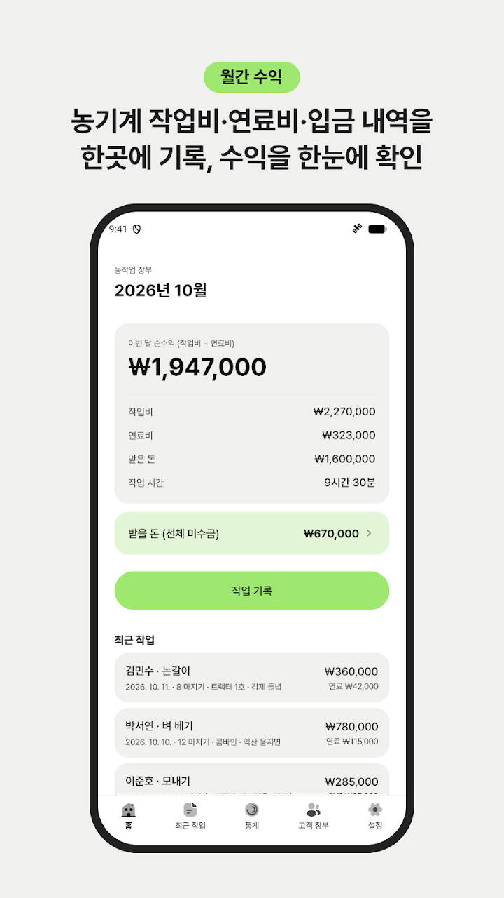
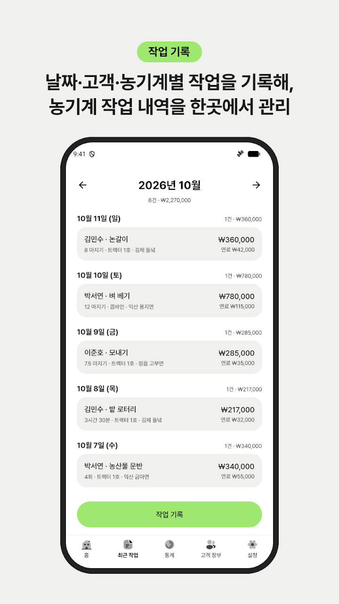
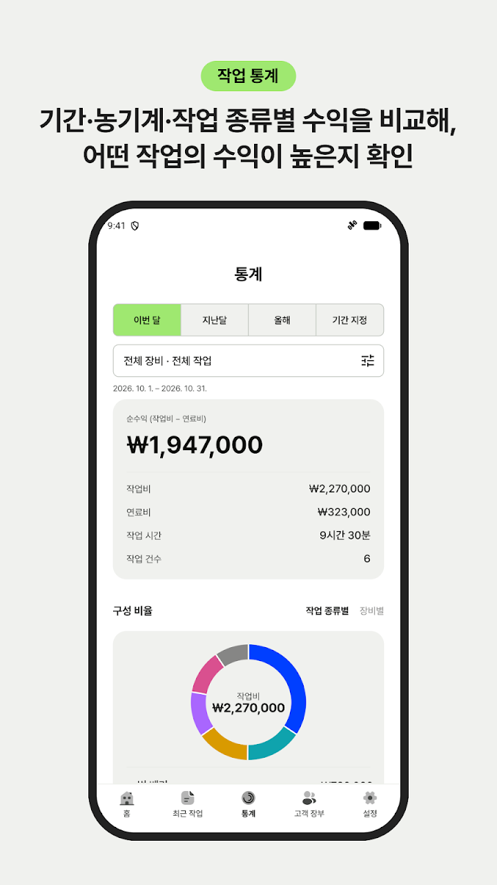
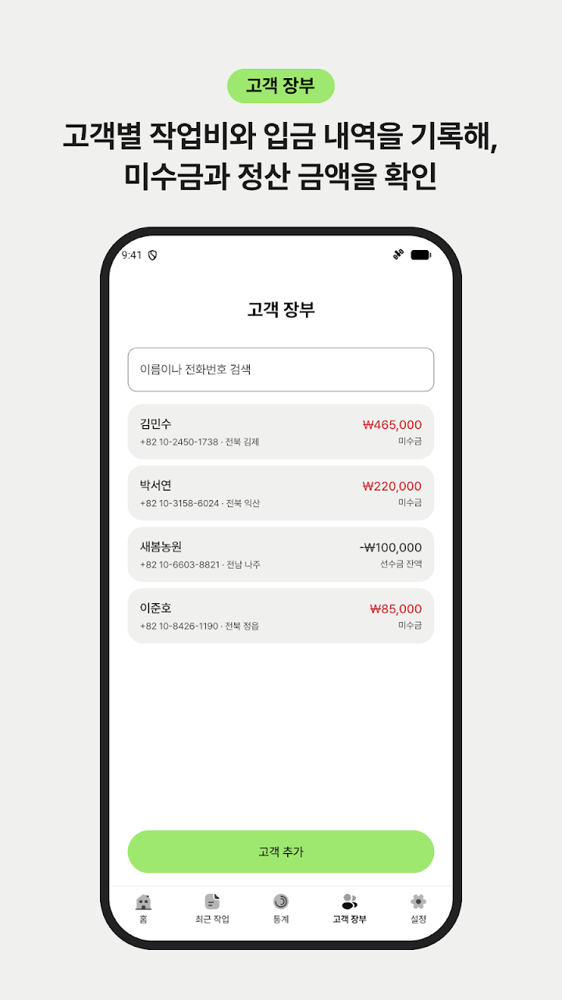
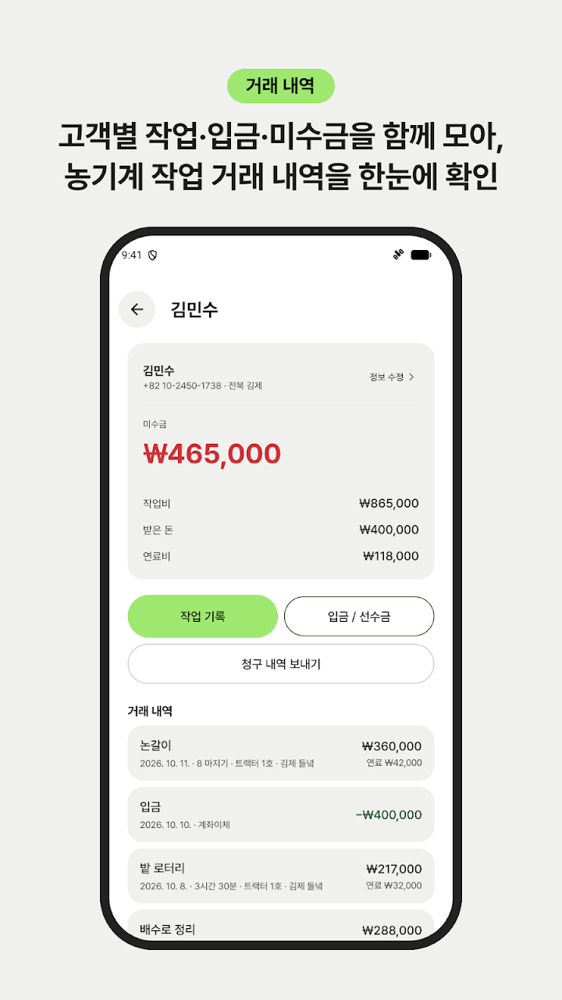

작업 한 건도 빠짐없이
날짜, 고객, 작업 종류, 장비, 논밭 위치, 메모를 함께 저장해요. 시간·면적·횟수로 요금을 정하고 수량과 단가로 작업비를 계산해요.
날짜, 고객, 작업, 장비만 적으면 작업비가 계산되고
고객별 입금과 미수금이 한눈에 정리돼요.
수첩 대신 휴대폰으로 장부를 쓰세요.





날짜, 고객, 작업 종류, 장비, 논밭 위치, 메모를 함께 저장해요. 시간·면적·횟수로 요금을 정하고 수량과 단가로 작업비를 계산해요.
연료비를 작업비와 따로 적어 순수익을 바로 확인해요. 자정을 넘긴 작업 시간도 계산돼요.
평, 마지기, ㎡, 헥타르, 에이커 등 익숙한 면적 단위를 그대로 써요.
같은 고객, 같은 작업이면 이전 단가와 요금 방식, 장비를 불러와요.
입금과 선수금을 기록하면 미수금과 남은 선수금이 정리되고, 정산 내역을 문자로 보낼 수 있어요.
장부는 기기에 저장되고, 원할 때 Google Drive에 백업하고 복원할 수 있어요.